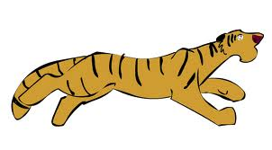

web 1 final
The Siberian Tiger
web 1 final project

images
- Location:
The Siberian Tiger lives in the birch forests of snowy and frigid Russia. It used to live in the colder parts of China and Korea, but not anymore. It generally live in the Sikhote Alin mountain region in Russia. there is a subpopulation of them in the southwest Primorye province, too. These areas are in the far east part of Russia.
- Habitat:
The Siberian Tiger thrives in environments with temperatures around -50 degrees fahrenheit (-45 degrees celcius). These cold areas are mostly in Russia, where the Siberian Tigers live.
- Why is it endangered?
It is endangered because of poachers and loss of environment due to development of living space and industrial factories.
- Name
The big cat's scientific name is Panthera tigris altaica. it can also be called the amur tiger by some people.
 we need help
we need help